01-RL训练基础: loop 与 RLHF-PPO
TL; DR：为什么 SFT 后还要 RL → RL loop: rollout → reward → advantage → update（= 推理 + 训练交替）→ PPO 各部件为什么存在 → RLHF 四模型 + 手写 BasicPPO → 资源画像：显存账 + 两种负载的计算特性
- [Quick Ref for 手写 code]：BasicPPO（§4.3）｜ ipynb ｜ Colab
- 高频手撕四个纯函数：
sft_logprob/compute_rewards/compute_gae/ppo_loss - 模型组件 + loop 骨架：熟悉结构、能调用即可
- 高频手撕四个纯函数：
本篇是 RL 系列第一篇，系列以 infra 视角为主。Plan的后续篇：02 算法演化（DPO / GRPO），03–06 训推协同，07 Agentic RL。
PS: 面试手撕 PPO 部分，感谢同组做 RL 算法的朋友给的参考 doc！
前言
03_02_SFT.md 之后，模型能听懂指令、按格式回答。对齐人类偏好、提升推理能力，靠的是 RL（Reinforcement Learning，强化学习）。
本篇的范围：
- 默认已熟：SFT 基础 和 推理基础（generate / sampling，见 05_01_推理基础.md）
- 算法只讲设计层：每个部件只回答"为什么需要它"，不追求细节
- 落点是 §5 资源画像：一个 RLHF (§4) 有几个模型、显存占多少、两种负载（训练推理）
整体顺序：为什么要 RL → loop 本体 → PPO 部件 → 四模型系统 → 资源画像。
1. 为什么 SFT 后还要 RL
1.1 从信号缺陷到 RL 范式
[SFT 的信号缺陷]
SFT 的监督信号是人写的演示：每个位置有唯一 GT（Ground Truth）token。这带来两个限制：
- 没有负反馈：数据里只有"该怎么写"，没有"不该怎么写"，无法通过梯度抑制坏输出
- 很多目标写不出 GT：没有唯一正确答案时，标注员写不出完美演示，但比较两个回答哪个更好又快又一致。信号形态从"演示"变成"偏好"，逐 token 交叉熵（CE）loss 就用不上了
[RL：从评价性反馈学习]
SFT 缺的这种信号形态，正是 RL 范式的定义。按学习信号分：
- 监督学习（含 SFT）：指导性反馈——每一步都给出正确动作，学习 = 模仿
- RL：评价性反馈——没有正确动作，agent 自己做动作，只收到一个分数。学习 = 试错：多做拿高分的动作，少做拿低分的
经典 RL 的设定是 agent 和环境的循环：
- agent 观察状态 \(s\) → 按策略 \(\pi\) 输出动作 \(a\) → 环境返回 reward \(r\) 和新状态 \(s'\) → 目标是最大化累计 reward。
flowchart LR
AG("agent<br/>(策略 π)") -->|"动作 a"| ENV("环境")
ENV -->|"reward r + 新状态 s'"| AG这个范式恰好补上 SFT 的两个缺陷：
- 反馈有高低：拿低分的动作被抑制——补上"没有负反馈"
- 反馈可以只是整条一个总分：不需要每步 GT，标注员打得了分——接住"写不出 GT"的目标
新的思考也来自这里：反馈延迟到一局结束才来，功劳怎么分回中间每一步成了新问题。
1.2 概率视角：两种 KL 方向
回忆 KL 散度：\(D_{KL}(q \,\|\, p) = \mathbb{E}_{x \sim q}[\log \frac{q(x)}{p(x)}]\)，衡量两个分布有多远，常见于蒸馏
这里要用它一条性质：不对称，\(D_{KL}(q \,\|\, p) \ne D_{KL}(p \,\|\, q)\)
把人类理想分布记作 \(P\)，模型分布记作 \(\pi_\theta\)。"让 \(\pi_\theta\) 逼近 \(P\)" 可以写成两个方向的 KL，SFT 和 RL 各选了一种：
- SFT 优化 forward KL：\(\min_\theta D_{KL}(P \,\|\, \pi_\theta)\)。
- 期望在 \(P\) 上取：\(P\) 有概率的地方 \(\pi_\theta\) 都必须给概率（mass-covering，全覆盖）
- RL 优化 reverse KL：\(\min_\theta D_{KL}(\pi_\theta \,\|\, P)\)。
- 期望在 \(\pi_\theta\) 自己身上取：自己会生成的地方必须"对"，不会生成的地方不管（mode-seeking，挑重点）。这正是"生成质量"要的性质
方向差异直接决定数据来源：
- SFT 的 forward KL 从 \(P\) 采样，即人写的数据集
- RL 的 reverse KL 从 \(\pi_\theta\) 采样，再配一个能打分的函数——采样就是 rollout，打分就是 reward，正好是 §2 loop 的两个组成
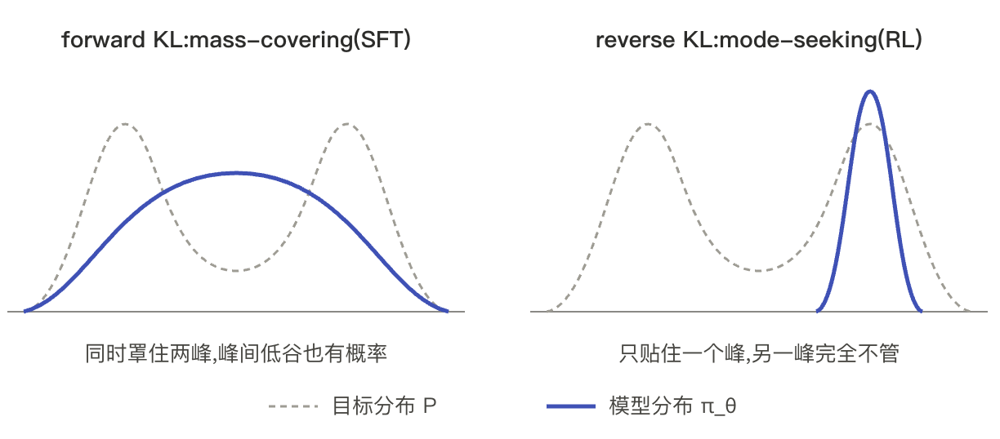
2. RL loop：训练和推理的交替
2.1 RL 概念 ↔ LLM 映射
§1 的 agent-环境循环搬到 LLM 上，"环境"退化得非常简单：没有外部世界。状态转移就是把新 token 拼到序列末尾；反馈在生成结束时来一次。逐项映射如下，生成一条 response 就是一条轨迹：
| RL 概念 | LLM 对应 | 备注 |
|---|---|---|
| 状态 \(s_t\) | prompt + 已生成的前 \(t-1\) 个 token | 每生成一个 token 状态就转移 |
| 动作 \(a_t\) | 第 \(t\) 步选出的 token | 动作空间 = 词表 |
| 策略 \(\pi_\theta(a_t \mid s_t)\) | LLM 的 next-token 分布 | 就是 logits 过 softmax |
| 轨迹 \(\tau\) | 一条完整 response | 长度 = 生成 token 数 |
| 奖励 \(r\) | response 级打分 | 整条一个分（§4.1），怎么摊到 token 见 §3 |
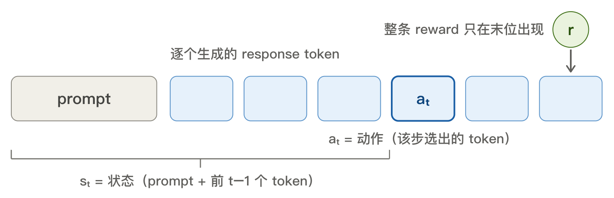
策略、状态转移都是现成的——LLM 本身就是一个逐 token 决策的 policy。被训练的这个 LLM，RL 语境里叫 actor。整个框架里唯一需要新造的部件是 reward（§4.1）。
2.2 loop 本体
一个 RL training step 分四段：rollout → reward → advantage → update。rollout 是 RL 术语，指"跑一遍当前策略收集数据"，LLM 下就是 actor.generate()：
flowchart LR
R("rollout<br/><br/>actor 自回归生成<br/>response<br/><b>= 推理负载</b>")
W("reward<br/><br/>RM 打分<br/>+ per-token KL 惩罚")
A("advantage<br/><br/>critic 估 V<br/>GAE 算每 token 的 A_t")
U("<span style='color:#fff'>update<br/><br/>PPO loss 更新<br/>actor / critic<br/><b>= 训练负载</b></span>")
R --> W --> A --> U
U -->|"新一批 prompt"| R
style R fill:#e8eaf6,stroke:#3f51b5,stroke-width:2px,color:#1a237e
style U fill:#3f51b5,stroke:#1a237e,stroke-width:2px,color:#fff四段各是什么计算：
- rollout（推理）：actor 逐 token 自回归生成 response
- reward：RM 给整条打分，组装成 per-token reward（§4.1 / §3.2）——整条一次前向
- advantage：critic 估每 token 的 \(V\)，GAE 算出 \(A_t\)（§3.3 / §3.4）——整条一次前向
- update（训练）：算 PPO loss，更新 actor / critic 权重（loss 见 §3）——前向 + 反向
只有首尾两段是重负载：rollout 走推理、update 走训练，两种负载交替出现，且共享 actor 的同一份权重。
中间 reward / advantage 只对整条 response 各做一次前向，没有自回归循环，很轻。
on-policy 的含义也在这张图里：用来算梯度的数据必须来自当前策略。策略一更新，旧 rollout 数据就过期了。想复用几步，需要 §3.5 的 importance ratio 修正。
3. PPO：每个部件为什么存在
最复杂的是 loss 怎么算（§3.1 policy gradient），也可以直接记结论
RL 算法用最基础的 PPO（Proximal Policy Optimization，近端策略优化，InstructGPT 采用的算法）。这节不推导，方法是从最朴素的 actor loss 起步，两个因子各自改造，拼成完整的 PPO loss（支线结构见 §3.0 末尾的图）。读完能对着最终公式说出每一项的来历。
3.0 先和 pretrain / SFT 对齐结构
PPO 是 RL 篇第一个算法。动手前先把它放回"训练一个 LLM"的框架里，和我们熟悉的 pretrain / SFT 对一遍：
| 输入 | 监督信号 | loss | |
|---|---|---|---|
| pretrain | 文本 | 有 GT：下一个 token 的词表 one-hot（自监督） | 逐 token CE |
| SFT | prompt + 演示 response | 有 GT：response 每个 token 的词表 one-hot（人工监督） | 逐 token CE（mask 掉 prompt） |
| RLHF-PPO | prompt（response 由 actor 自己生成） | 无 GT：整条 response 一个标量 reward（评价性反馈） | 逐 token 加权 logprob，权重 = reward 摊成 token |
三者都是同一个 LLM backbone（RL 里称 policy / actor），loss 也是同一个形状：
logprob 项 \(\log \pi_t\)：位置 \(t\) 的 logits 过 log_softmax，取该位置实际 token \(a_t\) 那一格；\(w_t\)：该 token 的 loss 权重。三者的差别就两处：
- token \(a_t\) 从哪来：pretrain / SFT 来自数据集（GT）；RLHF-PPO 来自 rollout，actor 自己采的
- 权重 \(w_t\) 是多少：pretrain / SFT 恒为 1，表现为逐 token CE；RLHF-PPO 手里只有整条 response 一个标量 reward，\(w_t\) 没有现成的
逐 token CE 是一般 CE 的退化形态。一般 CE 对词表求和 \(-\sum_v q(v) \log p(v)\)。\(q\) 为 one-hot 时塌缩成 \(-\log \pi_\theta(\text{GT}_t \mid s_t)\)，即 pretrain / SFT，\(w_t \equiv 1\)。
所以 §3 把骨架的两个因子逐一填实。§3.1 起点用 policy gradient 推出骨架：\(w_t \equiv R\)、logprob 项原样。之后两个因子分头改造：
- 支线一（§3.2–3.4）改 \(w_t\)：seq 级 reward 标量摊成逐 token 权重。
- 摊到 token（§3.2）→ 绝对值变相对值（§3.3）→ 降方差（§3.4），终点定义 \(w_t = A_t\)
- 支线二（§3.5）改 logprob 项：\(\log \pi_t\) 换成 clip 过的 ratio \(\rho_t\)，为复用 rollout；与 credit 分配无关
- §3.6 组装：两条支线拼回完整 loss
flowchart LR
S1("§3.1 seq 级起点<br/>loss = -Σ R·logπ_t")
subgraph WT["支线一：token 级权重 w_t"]
direction LR
S2("§3.2 摊到 token<br/>r_t / G_t") --> S3("§3.3 减 baseline<br/>A_t = G_t - V") --> S4("§3.4 GAE<br/>降方差")
end
subgraph LP["支线二：改 logprob 项"]
S5("§3.5 ratio + clip<br/>复用 rollout")
end
S1 --> S2
S1 --> S5
S4 --> S6("§3.6 组装<br/>PPO actor loss")
S5 --> S63.1 起点：seq 级 policy gradient (!!)
本节是和传统 RL 关系最大的部分，数学最多；也可以跳过推导，直接看 [rollout 梯度结论]
本节回答：actor 的 loss 从哪来。RL 没有 GT，只有一个目标：rollout 的平均 reward 尽量高。policy gradient 把这个目标变成能 backward() 的 seq 级 loss。
本节的两样产出，供后续使用：
- 理论基础：loss 按 token 展开就是 §3.0 的两因子骨架（\(\mathcal{L} = -\sum_t w_t \cdot \log \pi_t\)）；§3.2–3.5 在这个骨架上改造因子
- seq 打分 \(R\) 的去向：本节拿它当整条的权重；§3.2 起降级为 \(r_t\) 末位的一项
[目标与数据]
目标：actor 生成的 response 平均 reward 尽量高。这个平均分记作 \(J(\theta)\)：
- \(\theta\)：actor（这个 LLM）的全部参数，训练要更新的就是它
- \(y \sim \pi_\theta\)：§2.2 的 rollout（actor 自己推理采样生成的 response）
- \(R(y)\)：RM（Reward Model）给整条的标量打分（§4.1 细讲，目前当黑盒）
- \(J(\theta)\)：目标本身——当前 actor 采出的 response 的平均打分。\(\theta\) 一变，采样分布就变，平均分跟着变，所以是 \(\theta\) 的函数
[梯度怎么来：数学推导]
这步有点复杂，不想研究数学可以直接跳到 [rollout 梯度结论]
这一步是经典 RL 的 policy gradient（REINFORCE），LLM 场景只是把 policy 换成 actor。
要算的是目标 \(J(\theta)\) 对 actor 参数 \(\theta\) 的梯度。
先回忆 SFT 的梯度怎么来：每个 token 位置，模型前向输出一个词表概率分布，GT 是这个分布的 one-hot 版本，两者代入 CE 公式得 loss，直接 loss.backward()。
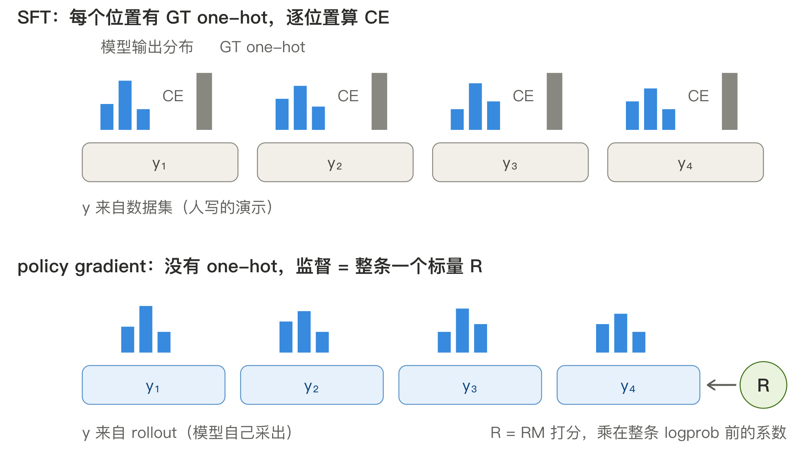
RL 的 \(J(\theta)\) 套不上这个流程。把期望展开成加权求和看它的结构：
- \(\pi_\theta(y)\)：每条 \(y\) 被采到的概率，取决于 actor 参数 \(\theta\)
- \(R(y)\)：对应 \(y\) 的 reward 打分
- \(R(y)\) 里没有 \(\theta\)——固定一条 \(y\)，打分就是常数（RM 有自己的参数，但冻结，不算在 \(\theta\) 里）
求导本身不难，对权重逐项导：\(\nabla_\theta J = \sum_y \nabla_\theta \pi_\theta(y) \cdot R(y)\)。难在算值：这个和要枚举所有可能的序列，算不动。两个解决 idea：
- idea 1 恒等式改写（log-derivative trick）：数学结论 \(\nabla_\theta \pi_\theta = \pi_\theta \, \nabla_\theta \log \pi_\theta\)，把权重里的 \(\pi_\theta\) 补回来，idea 2 就能用上。来历是对数求导法则移项（下方速查）；不想深究可以直接当结论用
- idea 2 蒙特卡洛：用多次采样估期望，\(\mathbb{E}_{y \sim \pi_\theta}[g(y)] = \sum_y \pi_\theta(y)\, g(y)\)
先 idea 1 替换、认出期望定义，随后 idea 2 蒙特卡洛采样估计（rollout 一批 \(y_i\)，对每条算期望括号里的量，求平均）：
前三步是恒等变形，最后一步 \(\approx\) 才是估计。蒙特卡洛的"多次采样"落到工程上，就是 rollout 一个 batch 一起算。
式里已经抽象出"SFT 那个标准反向"，所以实际计算就是：每条 \(y_i\) 做一次 SFT 式前向反向，乘上常数 \(R(y_i)\)，batch 求平均。
速查 · log-derivative trick（又名 score function estimator；RL 里就是 REINFORCE）
通用的期望-梯度恒等式，不是 RL / LLM 专有，统计与变分推断也用。
记号：\(p_\theta(y)\) 读作"参数为 \(\theta\) 的分布给样本 \(y\) 的概率"，一个随 \(\theta\) 可导的标量——本节里就是 \(\pi_\theta(y)\)，actor 给整条 response 的概率。两步：
- 对数求导法则 \((\ln f)' = f'/f\)，\(f\) 取 \(p_\theta(y)\)、导数取对 \(\theta\) 的梯度：\(\nabla_\theta \log p_\theta = \nabla_\theta p_\theta / p_\theta\)。移项得 \(\nabla_\theta p_\theta = p_\theta \, \nabla_\theta \log p_\theta\)——初等微积分结论，直接可用
- 代入 \(\nabla_\theta J\) 替换掉 \(\nabla_\theta p_\theta\)，多出来的 \(p_\theta\) 正好把求和收回期望形状：
\[ \nabla_\theta \sum_y p_\theta(y)\, f(y) = \sum_y \nabla_\theta p_\theta \cdot f = \sum_y p_\theta \cdot \nabla_\theta \log p_\theta \cdot f = \mathbb{E}_{y \sim p_\theta}\big[\, f(y) \, \nabla_\theta \log p_\theta(y) \,\big] \]本节取 \(f = R\)、\(p_\theta = \pi_\theta\) 就是上面的梯度。关键：\(f\)（这里是 \(R\)）不含模型参数 \(\theta\)，梯度全落在 \(\log p_\theta\) 上。
[rollout 梯度结论]
policy gradient 的 update = 把 prompt + rollout 当 SFT 数据训，每条序列的 loss 乘上自己的 reward（普通 SFT 相当于权重恒为 1）。一个 batch 里 reward 高的序列概率被推高，低的被压低。落成公式：
对应的具体计算：
- rollout + 打分：actor 对每条 prompt 采出 \(y_i\)；RM 给整条打一个分 \(R(y_i)\)，此后当常数用
- SFT 式 loss：prompt 拼上 \(y_i\) 做 teacher-forcing 前向，把 \(y_i\) 自己当 label 算逐 token CE（shift 一位、mask 掉 prompt，全同 SFT），求和得整条 seq 的 loss
- 乘分、平均：每条 loss 乘 \(R(y_i)\)，batch 求平均——就是 \(\nabla_\theta J\) 的蒙特卡洛估计
和 SFT 逐行对齐：
# SFT: token 序列 y 来自数据集
logp = actor(x, y).log_softmax(-1) # teacher-forcing 前向
loss = -logp.gather(y).sum() # 每个位置取 y_t 的 logprob, 即以 y 为 label 的 CE
loss.backward()
# policy gradient: y 来自 rollout, 再乘一个标量
y = actor.generate(x) # 采样, 不进计算图
R = reward_model(x, y) # 标量, 不含 actor 参数
logp = actor(x, y).log_softmax(-1) # 同一个前向
loss = -(R * logp.gather(y).sum()) # 唯一差别: 乘 R
loss.backward() # 同一个反向
[loss 换成逐 token 读法]
目前的 loss 是整条 seq 一个数，结构 = \(R \times \text{SFT 式 loss}\)。
两个因子里，分数 \(R\) 是常数。SFT 式 loss 就是逐 token CE 求和——CE 天然逐 token 算、再求和。按 token 展开（简写 \(\log \pi_t = \log \pi_\theta(a_t \mid s_t)\)）：
这就是 §3.0 承诺的形状（\(w_t\) 当常数用，stop-grad，被求导的只有 \(\log \pi\)）。
问题：\(w_t\) 恒 \(= R\)，写对和写错的 token 同奖同罚，不合理。支线一（§3.2–3.4）把 \(w_t\) 换成逐位置的量。logprob 项的问题是复用：rollout 贵，一批数据想多次更新。支线二（§3.5）把它换成 ratio 并 clip。分步见 §3.0 末尾的图。
3.2 token 级权重（1）：\(r_t\) 与 \(G_t\)
本节造两个逐 token 的量，引入一个新模型（ref），作 §3.3 权重的原材料。
- \(r_t\)：第 \(t\) 个 token 的即时 reward，由逐 token 的 KL 惩罚和末位的 RM 分组成
- \(G_t\)：第 \(t\) 个 token 的回报（return）：身后 \(r_k\) 的 suffix sum，从这一步到整条结束的总 reward，含末位的 RM 分
- ref（reference model）：actor 出发时那份模型权重的冻结副本，= KL 惩罚的基准
[造 token reward \(r_t\)]
RM 只在整条结束时给一个分，中间 token 没有即时 reward。于是我们定义：
关于 KL 惩罚：
- 为什么扣它：actor 可能找到打分高、实际很差的输出（reward hacking）；KL 把 actor 约束在出发点 ref 附近，偏得越远扣得越多
- 怎么算：冻结副本 ref 不参与 rollout。序列采出后，actor 和 ref 各对 prompt + response 做一次前向，logprob 逐位相减；比的是两个模型给同一个 token 的概率（类似蒸馏的 teacher-student）
- 不走梯度：它沿 \(r_t \to G_t \to A_t\) 一路当常数
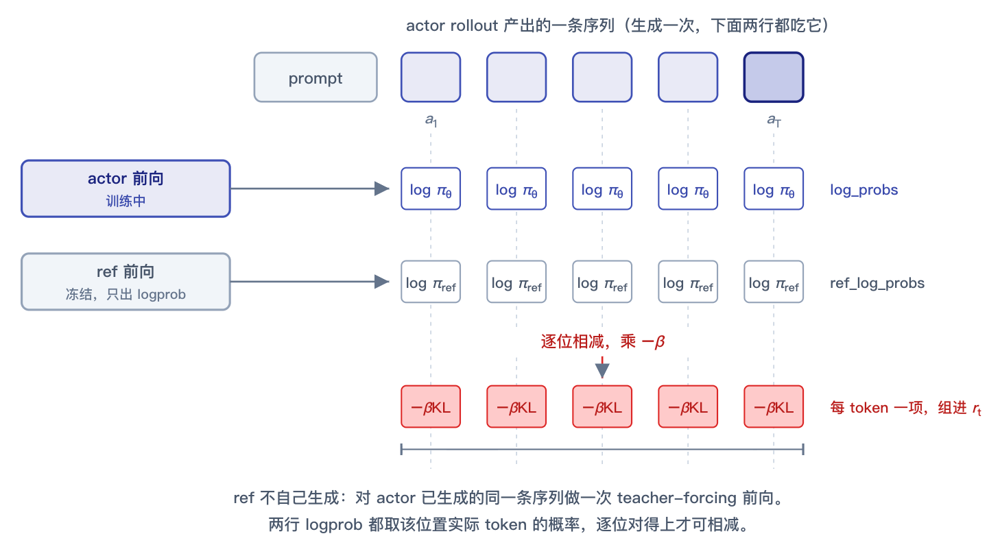
[回报 \(G_t\)：定义]
- 只算身后：token 只能影响从这一步起的 reward；身前的 \(r_k\) 在它生成时已定，不算进它的功劳——所以基础 idea 是 suffix sum
- RM 分怎么摊到 token：末位的 \(r_{\text{RM}}\) 通过 suffix sum 传回每个位置；RM 分本身始终只在末位
- 折扣因子 \(\gamma\)：经典 RL 还给远期 reward 打折，通式 \(G_t = \sum_{k \ge t} \gamma^{k-t} r_k\)；LLM 常取 \(\gamma = 1\)
- 递归形式：等价写法 \(G_t = r_t + \gamma G_{t+1}\)，实现从末位倒着递推；§3.4 的改造从它出发
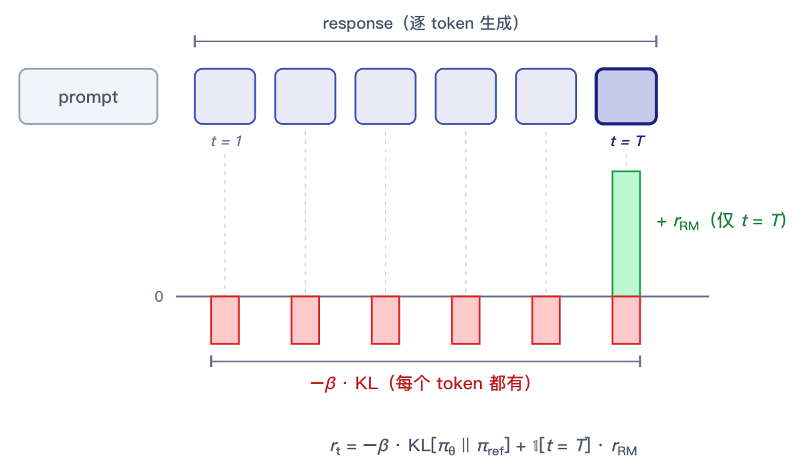
3.3 token 级权重（2）：advantage 与 critic
最直接的想法是拿 \(G_t\) 当权重，但有两个问题：
- 没区分度：末位 RM 分是 \(G_t\) 的主项，每个位置都含它（KL 项很小）；各位置数值接近，写对写错同奖同罚
- 方差大：跨样本看，后半段的采样随机性把整条 \(G_t\) 一起抬高或压低，梯度估计噪声大
修正：减一个逐位置的 baseline，权重换成 advantage（优势）：
\(V(s_t)\) = 从 \(s_t\) 出发预期拿多少分，\(A_t\) = 比预期好多少（正 = 推高该 token，负 = 压低）。对上前面的问题：
- 区分度：\(V\) 逐位置不同，影响 \(A_t\)
- 方差：\(A_t\) 压到 0 周围，有正有负
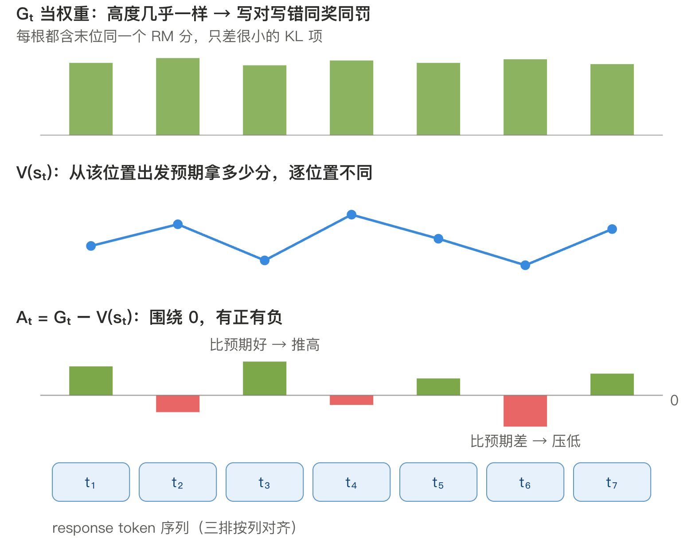
\(V\) 由 critic 估出——第二个要训练的模型：
- 结构：actor 同构的 LLM，lm_head 换标量 head（
nn.Linear(d, 1)），每位置输出一个 \(V(s_t)\) - 训练：loss = \(\text{MSE}(V(s_t), G_t)\) 回归，梯度更新整个模型（初始化常复用 RM，见 §4.2）
3.4 token 级权重（3）：GAE 结论
§3.3 的 \(A_t = G_t - V(s_t)\) 还剩一个噪声源：\(G_t\) 是身后每一步实际采样的 \(r_k\) 加出来的，response 越长随机项越多（方差大）。
降噪思路：不把身后全部走完，只走一步，剩下的用 critic 预估收尾。分两步：
- 恒等展开：用 §3.2 的递归把 \(A_t\) 里的 \(G_t\) 展开一层，\(A_t = G_t - V(s_t) = r_t + \gamma G_{t+1} - V(s_t)\)，此时无近似
- 近似替换：方差全部藏在 \(G_{t+1}\) 里（身后实际采样的 suffix sum），用 critic 的预估 \(V(s_{t+1})\) 顶替它，得到 \(A_t\) 的新估计：
这就是单步 TD 残差（temporal difference）。实际值只用了 \(r_t\) 一步，方差小；代价是 critic 估不准就有偏。
现在我们有了两个极端：\(G_t - V(s_t)\) 把身后全走完，无偏但方差大；\(\delta_t\) 只走一步，方差小但有偏。
GAE（Generalized Advantage Estimation） 在两者之间折中，形式是一个简单递归：
读法：本步的实际残差 \(\delta_t\) 全额保留，身后的估计 \(A_{t+1}\) 按 \(\lambda\) 打折。打折按等比数列累乘：离得越远的 \(\delta\) 被打折越多次，信得越少。\(\lambda = 0\) 就是 \(\delta_t\)；\(\lambda = 1\) 恰好还原 \(G_t - V(s_t)\)；中间是 bias-variance 取舍。LLM 常配 \(\gamma = 1\)、\(\lambda \approx 0.95\)。计算从末位倒着递推（\(A_{T+1} = 0\)）。
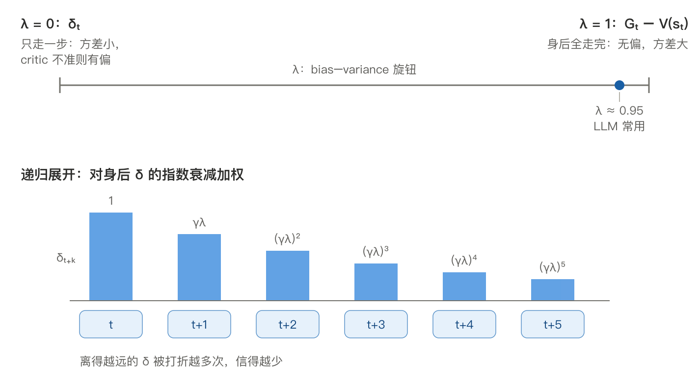
到此支线一走完，权重定型：\(w_t\) = GAE 递推出的 \(A_t\)，当常数进 loss。§3.5 转入支线二，改另一个因子 logprob 项。
3.5 换 logprob 项：安全复用数据
[复用 = 同一批数据多次更新]
rollout 要整条自回归生成，是 loop 里最贵的一段（§5）。一批数据只更新一次就扔，太浪费。
PPO 的做法：rollout 一次，存成一批 experiences（序列、每 token 的旧 logprob、算好的 \(A_t\)），用它连做 ppo-epochs 次前向反向。生成只发生一次；复用的是数据，不是重跑 prompt 重新采样。
[代价：数据过期]
第一次更新后 \(\pi_\theta\) 就变了，这批数据却是旧策略 \(\pi_{\theta_{\text{old}}}\) 采的——on-policy 被打破。§3.1 的梯度公式以"数据来自当前策略"为前提，直接再用有系统性偏差。
[修正：importance ratio]
修正的 idea 是 importance sampling：拿旧分布的样本估新分布的期望。办法是给每条样本乘一个改正系数 = 新旧分布给它的概率比（不展开推导）。直觉：新策略比旧策略更爱生成的 token，权重调大；反之调小。落到每个 token，loss 里的 \(\log \pi_t\) 换成系数 \(\rho_t\)：
- 分子分母：都是概率，不是 logits（logits 未归一化，跨前向不可比）。实现里存 logprob，\(\rho_t = \exp(\log\pi_\theta - \log\pi_{\theta_{\text{old}}})\)；分母来自 experiences，常数；分子由当前 actor 实时前向算出
[clip：限步长]
概率在 \((0, 1]\) 内，但概率的比值没有上限：旧策略给某 token 0.001、新策略给 0.5，\(\rho_t = 500\)。这种 token 会主导梯度，一步把参数推得很远——复用的前提"新旧策略接近"就被破坏了。PPO 截断：
\(\rho_t\) 出了 \([1-\epsilon, 1+\epsilon]\) 就被换成边界常数，常数没有梯度，该 token 不再推动更新。
效果：每个 token 的概率每轮最多推到旧策略的 \(1 \pm \epsilon\) 倍附近，新策略被限制在 \(\pi_{\theta_{\text{old}}}\) 的邻域内。这就是名字里 Proximal（邻近）的含义。min 让截断只单向生效：只挡"朝优势方向继续推"，往回修正的梯度保留。
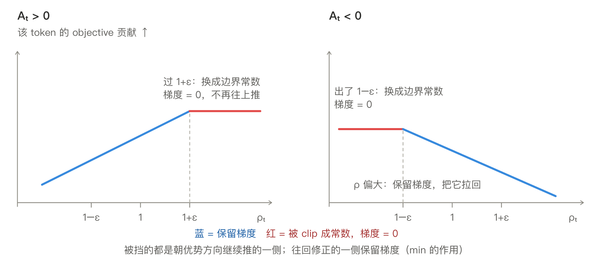
复用 rollout 多次更新的整体设计：
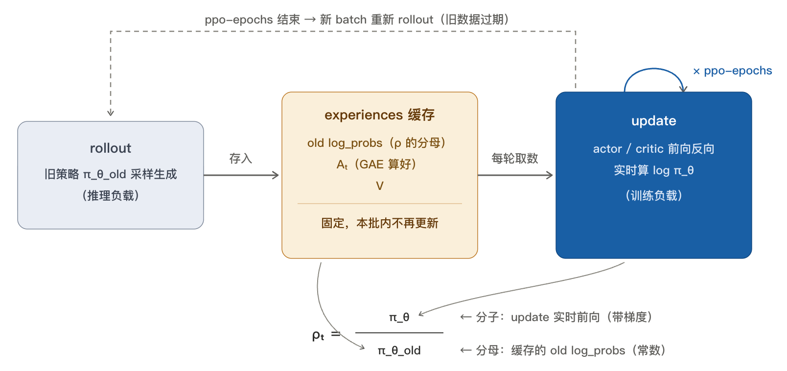
训推一致性（06 篇）的问题源头在这里：这个公式假设 \(\rho_t\) 的分子分母来自同一套计算。实际系统里分母由推理引擎算、分子由训练引擎算，两边数值本身就有差异。
3.6 组装：完整的 actor loss
把 §3.1–3.5 拼起来，就是 PPO 实际用的 actor loss：
对照 §3.0 的骨架 \(\mathcal{L} = -\sum_t w_t \cdot \log \pi_t\)，两条支线在此汇合：
- 支线一：\(w_t \to A_t\)：GAE（§3.4）递推的优势，原材料是 per-token reward \(r_t\)（§3.2）和 critic 估的 \(V\)（§3.3）
- 支线二：\(\log \pi_t \to\) clip 过的 \(\rho_t\)：importance ratio 让一批 rollout 复用 ppo-epochs 次，clip 限每步步长（§3.5）
外加 critic 自己的 loss \(\text{MSE}(V, G_t)\)（§3.3），和 actor 同步更新。
这套 loss 同时要 4 个模型在场：actor、critic、RM、ref——正是 §4 逐个交代、§5 算账的对象。
[一个 step 的完整计算链]
现在直接利用所有结论，按一个 training step 走一遍：
- rollout：actor 对 prompt 采出 response（推理负载）
- no-grad 前向：四个模型各对 prompt + response 前向一次
- actor 出 old_logp（\(\rho_t\) 分母，存进 experiences）
- ref 出 ref_logp、RM 出末位标量 \(r_{\text{RM}}\)、critic 出逐位置 \(V(s_t)\)——都是算 \(A_t\) 的原材料
- 组装 \(r_t\)：old_logp − ref_logp 得 KL 惩罚，末位叠 \(r_{\text{RM}}\)（§3.2）
- GAE：\(r_t\) 配 \(V\) 倒序递推出 \(A_t\)（actor 权重）；顺带 \(G_t = A_t + V\)，作 step 5 critic 参数更新的 label（§3.3 / 3.4）
- update × ppo-epochs：
- 每轮 actor 前向出 new_logp（唯一带梯度的前向）→ \(\rho_t\) → clip → actor loss；
- critic 前向出新 \(V\) → \(\text{MSE}(V, G_t)\)；
- 一起反向、step（§3.5）
1–4 每个 step 只算一次，产物全程当常数；只有 5 在更新参数。逐行实现见 §4.3。
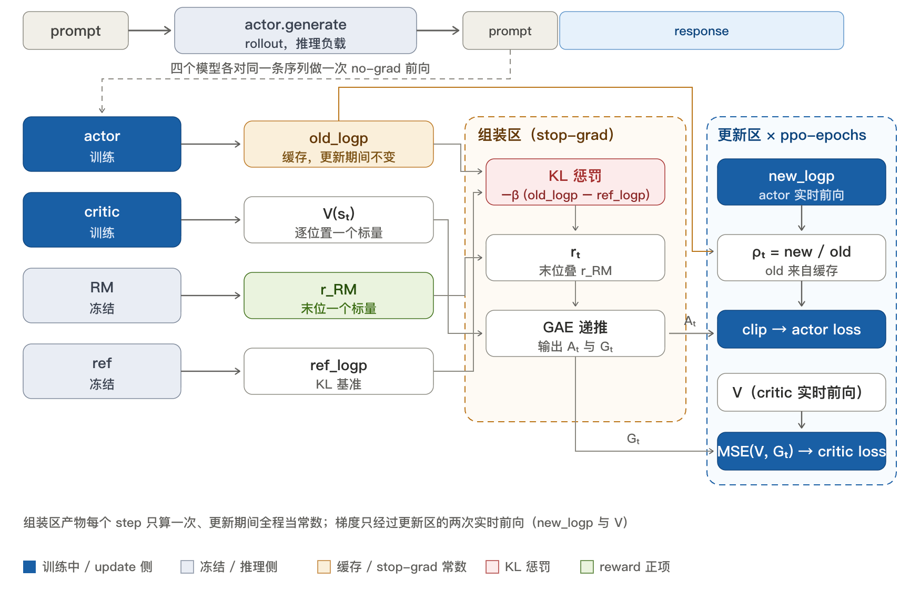
4. RLHF 四模型 (InstructGPT)
§3 的四个模型里只剩 RM 还是黑盒。整条 response 的分数从哪来？开放对话没有可编程的打分规则，分数只能来自人。
把人类偏好标注训成打分模型，拿它当 reward 跑 RL，就是 RLHF（Reinforcement Learning from Human Feedback，人类反馈强化学习）。InstructGPT（OpenAI 2022，ChatGPT 的方法原型）把它定型成三阶段：SFT → 训 RM → PPO。
4.1 RM：偏好怎么变成分数
数据形态 §1.1 已经给出：标注员写不出完美演示，但比较两个回答哪个更好，又快又一致。所以 RM 要从"比较"学出"标量分"。
- 数据：
- pair \((x, y_w, y_l)\) = 同一 prompt \(x\) + 两条完整 response，\(y_w\) 好（chosen）、\(y_l\) 差（rejected）
- 人类偏好 = 单 pair 二选一，但一批 pair 可以定出连续分——同 ELO：大量单场胜负拟合出每人一个 rating
- 结构 / IO：
- 与 critic 同构——SFT 后模型的 backbone + 标量 head
nn.Linear(d, 1)，从 SFT 初始化 - 输入一条 (prompt, response)，输出标量 \(r_\phi(x, y)\)。差别只在读位：critic 每位置都出 \(V(s_t)\)，RM 只取末位那个当整条分数（causal mask 下只有末位能看到整条）
- 与 critic 同构——SFT 后模型的 backbone + 标量 head
- 训练（InstructGPT 第 2 阶段）：
- 每 pair 前向两次得打分 \(r_w, r_l\)
- \(\sigma\) = sigmoid，\(\sigma(r_w - r_l)\) = "\(y_w\) 更好" 的预测概率；loss 是它的二分类 CE（label 恒为 \(y_w\) 赢），反向更新整个模型：
模型 forward 始终是"一条 → 一个分"，成对只在 loss；所以训完能直接当 loop 里的单条 reward。训好冻结（§4.2）。
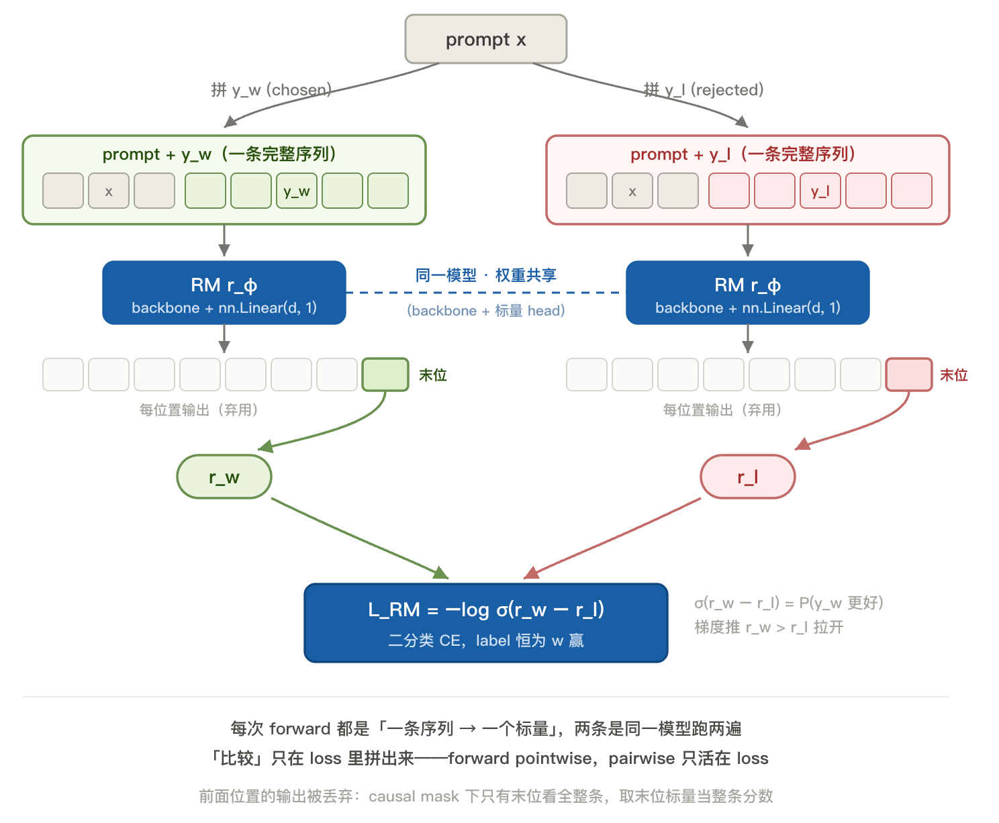
4.2 四模型系统
RM 就位，四个模型到齐。对照章首的三阶段：前两阶段的产物，在 第三阶段 PPO 里各占一个位置：
| 模型 | 结构 | 来自哪个阶段 | 训练？ | 在 loop 里做什么 |
|---|---|---|---|---|
| actor | LLM | SFT 模型 | ✅ 训练 | rollout 生成；update 被更新 |
| critic | LLM + 标量 head | 常从 RM 初始化 | ✅ 训练 | 每 token 估 \(V(s_t)\)，供 GAE |
| RM | LLM + 标量 head | SFT 模型经 §4.1 偏好训练 | ❄️ 冻结 | response 级打分 |
| ref | LLM | SFT 模型副本 | ❄️ 冻结 | 提供 KL 惩罚的基准 logprob |
每个模型在一个 step 里算什么、什么时候算，§3.6 的计算链已排过时序；§4.3 用代码逐行走一遍。四个模型、两种负载，这就是 §5 要算账的对象。
4.3 手写 BasicPPO
把 §4.2 的表和 §3.6 的计算链落成能跑的代码，分两档。高频手撕的纯函数是面试重点，练到可默写；模型组件 + loop 骨架熟悉结构、能调用即可。toy 规模（词表 100、hidden 64），CPU 直接跑通；完整可运行版见 11_basic_ppo.ipynb。真实系统的工程项省略。
[高频手撕：四个纯函数]
面试手撕 PPO 部分，感谢同组做 RL 算法的朋友给的参考 doc！
四个函数 = 一条四段流水线，一段一个：
sft_logprob：SFT 式 logprob \(\log\pi_t\)（§3.0）compute_rewards：per-token reward \(r_t\)（§3.2）compute_gae：优势 \(A_t\)，最终的 per-token 权重（§3.4）ppo_loss：clip 版 actor loss，多轮复用（§3.6）
后两个是纯 PPO 手撕的核心；前两个是 RLHF 特有的前置，纯 PPO 没有。下面按这个分界拆成两块。
① logprob + ② per-token reward（RLHF 前置）：
import torch
import torch.nn as nn
import torch.nn.functional as F
def sft_logprob(model, ids, p_len):
"""
计算 response 段每 token 的 logprob（§3.0），即 SFT 逐 token CE 里那个 logprob
参数:
- model: actor 或 ref
- ids: prompt + response 拼好的完整序列，形状为 (B, T)
- p_len: prompt 长度，用来切掉 prompt 段
返回:
- response 每位的 log π(a_t | s_t)，形状为 (B, T_resp)
"""
# 整体左移一位: 输入 ids[:-1], 位置 j 的输出去预测真实的下一个 token ids[j+1] (teacher-forcing)
logp = model(ids[:, :-1]).log_softmax(-1) # (B, T-1, V) 位置 j 的分布 = 对 ids[j+1] 的预测
tgt = ids[:, 1:].unsqueeze(-1) # (B, T-1, 1) label = 右移一位取真实 token, 同 SFT
logp = logp.gather(-1, tgt).squeeze(-1) # (B, T-1) 每位取实际 token a_t 那一格的 logprob
# response 首 token 落在位置 p_len; 因左移一位, 它的预测分在索引 p_len-1, 往后全是 response 段
return logp[:, p_len - 1:] # (B, T_resp) 只留 response 段, prompt 段不进 loss
def compute_rewards(old_logp, ref_logp, r_rm, mask, beta=0.1):
"""
组装 per-token reward r_t（§3.2）：每 token 一份 KL 惩罚，最后一个有效 token 叠 RM 分
参数:
- old_logp / ref_logp: actor / ref 对同一序列的 logprob，形状为 (B, T_resp)
- r_rm: RM 给整条的标量分，形状为 (B,)
- mask: 1=有效 response token，0=EOS 之后的 pad，形状为 (B, T_resp)
返回:
- 每 token 的即时 reward，形状为 (B, T_resp)
"""
r = -beta * (old_logp - ref_logp) * mask # KL 惩罚, pad 位清零
last = mask.sum(1).long() - 1 # 每条最后一个有效 token 的下标
r[torch.arange(len(r)), last] += r_rm # RM 分加在最后有效位 (§3.2 的 1[t=T]·r_RM)
return r
③ GAE 优势 + ④ clip loss——PPO 核心。
compute_gae 把参考 doc 的 dones 换成 LLM 的 EOS/pad 边界：
def compute_gae(r, v, mask, gamma=1.0, lam=0.95):
"""
计算 Generalized Advantage Estimation (GAE)（§3.4），倒序递推
δ_t = r_t + γV_{t+1} − V_t，A_t = δ_t + γλ·A_{t+1}
参数:
- r: 每 token 即时 reward，形状为 (B, T_resp)
- v: critic 估的 V(s_t)，形状为 (B, T_resp)
- mask: 1=有效 token，0=pad，兼作 (1 − done)，形状为 (B, T_resp)
- gamma / lam: 折扣因子 / GAE 衰减因子
返回:
- adv: 优势 A_t，给 actor 当权重，形状为 (B, T_resp)
- ret: A_t + V_t，给 critic 当回归 label（pad 位均 0），形状为 (B, T_resp)
"""
adv, A = torch.zeros_like(r), 0
for t in reversed(range(r.shape[1])): # 从末位往前推
if t + 1 < r.shape[1]:
nonterm = mask[:, t + 1] # 下一位是否仍是有效 token
v_next = v[:, t + 1] * nonterm
else:
nonterm, v_next = 0, 0 # 序列最右端, 无下一状态
delta = r[:, t] + gamma * v_next - v[:, t] # 单步 TD 残差 δ_t
A = delta + gamma * lam * nonterm * A # 跨到 pad 时 nonterm=0, 重置
adv[:, t] = A
return adv * mask, (adv + v) * mask # pad 位清零
def ppo_loss(new_logp, old_logp, adv, mask, eps=0.2):
"""
计算 clip 版 actor loss（§3.6）：−E[ min(ρ_t·A_t, clip(ρ_t, 1±ε)·A_t) ]，只在有效位取均值
参数:
- new_logp: 当前 actor 实时前向，唯一带梯度，形状为 (B, T_resp)
- old_logp: rollout 时存下的旧 logprob（常数），形状为 (B, T_resp)
- adv: GAE 优势 A_t（常数），形状为 (B, T_resp)
- mask: 1=有效，0=pad，形状为 (B, T_resp)
返回:
- 标量 loss
"""
ratio = (new_logp - old_logp).exp() # ρ_t = π_θ/π_old, logprob 差取 exp (§3.5)
surr1 = ratio * adv # 不截断
surr2 = ratio.clamp(1 - eps, 1 + eps) * adv # 截断到 [1-ε, 1+ε]
loss = -torch.min(surr1, surr2) # 取更小者 (§3.6): 出界那侧梯度 = 0
return (loss * mask).sum() / mask.sum() # masked mean, pad 位不算
四段里前三段（sft_logprob / compute_rewards / compute_gae）在 loop 里输入都是 no-grad 张量、输出当常数；只有 ppo_loss 的 new_logp 带梯度。
[补充结构：四个模型与 rollout]
这部分面试一般不要求手写，熟悉结构、能调用即可。结构只有两种：带 lm_head 的 Actor，和带标量 head 的 ScalarLM（critic 与 RM 同构，§3.3 / §4.1）：
import copy
V, D = 100, 64 # 词表 / hidden, toy 规模
EOS = 0 # 约定 token 0 为 EOS, 标 response 结束
class MiniLM(nn.Module):
"""共用 backbone: embedding + 2 层 causal transformer, 输出每位置 hidden"""
def __init__(self):
super().__init__()
self.emb = nn.Embedding(V, D)
layer = nn.TransformerEncoderLayer(D, nhead=4, dim_feedforward=4 * D,
dropout=0.0, batch_first=True) # 关 dropout: 前向确定
self.blocks = nn.TransformerEncoder(layer, num_layers=2)
def forward(self, ids): # [B,T] -> [B,T,D]
mask = nn.Transformer.generate_square_subsequent_mask(ids.shape[1])
return self.blocks(self.emb(ids), mask=mask, is_causal=True)
class Actor(nn.Module):
"""LLM 本体: backbone + lm_head"""
def __init__(self):
super().__init__()
self.lm, self.lm_head = MiniLM(), nn.Linear(D, V)
def forward(self, ids): # -> [B,T,V] logits
return self.lm_head(self.lm(ids))
@torch.no_grad()
def generate(self, ids, n_new): # toy 版 rollout, 无 KV cache
for _ in range(n_new): # 真实系统这段走推理引擎 (§5.2)
p = self(ids)[:, -1].softmax(-1) # 真实会在所有序列都出 EOS 时提前停
ids = torch.cat([ids, torch.multinomial(p, 1)], dim=1)
return ids # 仍生成定长 n_new, EOS 之后靠 mask 屏蔽
class ScalarLM(nn.Module):
"""critic 与 RM 同构: backbone + 标量 head"""
def __init__(self):
super().__init__()
self.lm, self.head = MiniLM(), nn.Linear(D, 1)
def forward(self, ids): # -> [B,T] 每位置一个标量
return self.head(self.lm(ids)).squeeze(-1)
actor = Actor() # ✅ 训练
critic = ScalarLM() # ✅ 训练 (实际常从 RM 初始化)
rm = ScalarLM().eval() # ❄️ 冻结; 随机权重代替 §4.1 训好的 RM
ref = copy.deepcopy(actor).eval() # ❄️ 冻结; actor 出发点的副本
[一个 training step]
四段注释是 §3.6 计算链的浓缩（组装 \(r_t\) + GAE 并成第 3 段）；只有第 4 段带梯度：
opt = torch.optim.Adam([*actor.parameters(), *critic.parameters()], lr=1e-4)
def ppo_step(prompt, n_new=16, ppo_epochs=4):
p_len, B = prompt.shape[1], prompt.shape[0]
# 1) rollout: 推理负载
ids = actor.generate(prompt, n_new)
# prompt 段已由 sft_logprob 用 p_len 切掉; 这里的 mask 只切 response 内部的 pad
# response 变长: 各条在不同位置生成 EOS, EOS 之后的位置是 pad, 要 mask 掉
eos = (ids[:, p_len:] == EOS).long() # (B, n_new) EOS 处为 1
# cumsum 数"到本位为止的 EOS 数", 减本位得"本位之前"的 EOS 数; ==0 即仍在首个 EOS(含)之前
mask = (eos.cumsum(1) - eos == 0).float() # (B, n_new) 到首个 EOS(含)为 1, 之后 pad 为 0
last = mask.sum(1).long() - 1 # (B,) 每条最后一个有效 token 在 response 段内的下标
# 2) no-grad 前向 x4, 产物即 experiences, 更新期间全程当常数
with torch.no_grad():
old_logp = sft_logprob(actor, ids, p_len) # (B, T_resp) ρ_t 的分母 (§3.5)
ref_logp = sft_logprob(ref, ids, p_len) # (B, T_resp) KL 基准 (§3.2)
# V(s_t) = 生成 response 第 t 个 token 前的状态价值 = critic 在位置 t-1 的输出;
# 同 logp 一样左移一位对齐, 故 response 段取 [p_len-1:-1]
v = critic(ids)[:, p_len - 1:-1] # (B, T_resp) 每个 response 位置的 V(s_t)
r_rm = rm(ids)[torch.arange(B), p_len + last] # (B,) p_len+last=末位绝对下标, 取该处标量作整条分 (§4.1)
# 3) reward 组装 + GAE
rewards = compute_rewards(old_logp, ref_logp, r_rm, mask)
adv, ret = compute_gae(rewards, v, mask)
# 4) update: 同一批 experiences 复用 ppo-epochs 次, 训练负载
for _ in range(ppo_epochs):
new_logp = sft_logprob(actor, ids, p_len) # 唯一带梯度的 logprob
actor_loss = ppo_loss(new_logp, old_logp, adv, mask) # §3.5 / 3.6
v_pred = critic(ids)[:, p_len - 1:-1]
value_loss = ((v_pred - ret) ** 2 * mask).sum() / mask.sum() # masked MSE (§3.3)
opt.zero_grad(); (actor_loss + 0.5 * value_loss).backward(); opt.step()
return actor_loss.item(), value_loss.item()
for step in range(3): # 跑 3 个 step
print(ppo_step(torch.randint(V, (2, 8))))
RM 随机，reward 无意义，所以这段只验接线、不验收敛——loss 上下跳正常。正确性怎么测见 §6。
toy 为了跑通省掉了这些工程项，真实实现都要补上：
- 变长 prompt 的 attention mask：BasicPPO 处理了变长 response（EOS + response_mask），prompt 却都等长。真实 batch 里 prompt 也长短不一：要左 pad，并加 attention mask 让注意力跳过 pad token。toy 的
MiniLM只有 causal mask（管自回归），没有这个 padding mask。 - KL 惩罚的另一种放法：§3.2 把 KL 并进 \(r_t\)。也可以不并，单独作一项加到 loss（\(\mathcal{L}^{\text{actor}} + \beta \cdot \text{KL}\)）——目标等价、实现不同。GRPO 用后者，02 篇展开。
- 双引擎：toy 里
generate和 update 用同一个actor对象。真实系统generate走推理引擎（vLLM）、update 走训练引擎（Megatron / FSDP），同一份权重在两套系统各存一份。§5 起全系列都在处理这件事。 - 训练稳定性 trick：一批只影响"训得稳不稳"、不改设计的调参项，本篇不展开——advantage 按 batch 白化（减均值除标准差，稳梯度尺度）、reward clip、entropy bonus（loss 加一项策略熵，防策略过早塌缩成只输出几个 token）、value clip（限 critic 的 \(V\) 单步别跳太远）、actor / critic 分开 optimizer。
5. 资源画像
§4 四个模型到齐。本节给一个 RLHF step 算一笔账：显存占多少（§5.1）、rollout 和 update 各是什么负载（§5.2）。这笔账是后续系列的出发点——每一篇要解决的问题都能在这里找到起因，§5.3 汇总成一条后续路线。
5.1 显存账
以 7B、bf16 混合精度、Adam 为例，每个模型按状态分两档：
- 训练态（actor / critic）：权重 2 + 梯度 2 + fp32 master 4 + Adam 状态 8 = 16 bytes/param
- 冻结态（RM / ref）：只存 bf16 权重 = 2 bytes/param
7B 代入：
| 模型 | 状态 | 显存（7B） |
|---|---|---|
| actor | 训练态 | ~112 GB |
| critic | 训练态 | ~112 GB |
| RM | 冻结 | ~14 GB |
| ref | 冻结 | ~14 GB |
| 合计（未算激活 / KV cache） | ~250 GB |
这张表带出两个问题：
- 单卡装不下：~250 GB 远超单卡显存，四个模型怎么摆到一组 GPU 上要专门设计
- 同一份权重、两种运行时：rollout 时 actor 要额外的 KV cache 和推理引擎运行时，而它训练态的优化器状态此刻全程闲置。放置策略得处理这种切换
5.2 两种负载的计算特性
rollout 和 update 的差异，就是推理和训练的差异（细节见 05_01_推理基础.md，此处只列对系统设计有影响的几条）：
| rollout（推理） | update（训练） | |
|---|---|---|
| 计算模式 | 自回归，逐 token decode | teacher-forcing，全序列一次前向 + 反向 |
| 特性 | memory-bound | compute-bound |
| 时长 | 不定，由最长 response 决定 | 相对固定 |
| 想要的引擎 | vLLM / SGLang（KV cache / continuous batching） | Megatron / FSDP（并行 / 优化器分片） |
最关键的是最后一行：两种负载的最优引擎不是同一个。工业实践里 rollout 用推理引擎、update 用训练引擎，同一份权重在两套系统里各存一份。这一个事实派生出后续一整串系统问题。
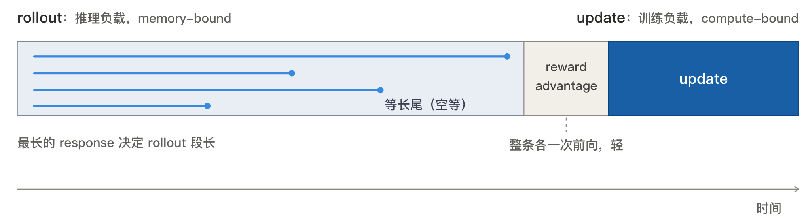
时间上 rollout 通常占大部分，且 response 越长占比越高。reasoning 任务里生成几万 token，rollout 占比可以远超一半。一批 rollout 的时长由最长那条 response 决定：短的先生成完、之后一直空等。这个长尾是后续异步化要处理的对象。
5.3 三个结论与后续
收束这张画像：
- 贵：四个模型、~250 GB 起步，显存主要压在两个训练态模型上
- 慢：每个 step 内嵌一次完整推理，rollout 长尾决定 step 时长
- 冲突：两种负载各要一套引擎，同一份权重要在两套系统间保持同步
Plan 后续从这三条分两条线走🤔：
- 算法线（02）：从"贵"入手，减少在场的模型数——DPO 删掉 rollout 和 RM、GRPO 删掉 critic。算法能删的到此为止
- 系统线（03–06，训推协同四篇）：剩下的模型和负载拆不掉，在系统层支撑，沿一条因果链推进：
- 03 架构与放置：四个模型怎么摆到一组 GPU 上——colocate 合放还是分离部署
- 04 权重同步：训练引擎每步更新完，权重要 reshard 成推理引擎的布局再同步过去
- 05 异步化：同步卡在 critical path 上，提速只能让 rollout 和 update 异步跑，代价是数据变旧（staleness）
- 06 一致性：异步 + 双引擎让 §3.5 的 ratio 分子分母来自两套计算，数值对不上，修正它正好绕回算法
再往后 07 Agentic RL：引入多轮、工具调用和环境后，03–06 的问题被放大重演。
6. 代码实现
toy 规模（词表 100、hidden 64），CPU 秒级跑通（真实规模的四模型单卡装不下，见 §5.1 的账）：11_basic_ppo.ipynb。ipynb 的 §1–3 是 §4.3 的代码，§4 验证正确性。RL 没有逐 token GT，跑通 ≠ 算法对，分两步查。
① 逐个函数对参照：四个纯函数各有一个能算准的参照，bug 能定位到单个函数。
| 函数 | 参照 |
|---|---|
sft_logprob |
真 token logprob \(= -\text{CE}\)，与 F.cross_entropy 取负对齐 |
compute_rewards |
actor==ref → KL 恒 0，只剩末位 RM 分，落在最后一个有效 token |
compute_gae |
\(\lambda{=}1\) 还原 \(G_t-V_t\)、\(\lambda{=}0\) 等于 \(\delta_t\)；中间与 \(\sum_l(\gamma\lambda)^l\delta_{t+l}\) 对齐；pad 清零 |
ppo_loss |
ratio 出界朝"继续推"方向梯度 0、"往回修"保留；\(\rho{=}1\) 退化成 policy gradient |
② 整体看 reward 涨：拼起来没有可对的参照，只能看它学不学得动——换成确定性的 toy reward 训几百 step，batch 平均 reward 单调涨即整体自洽。
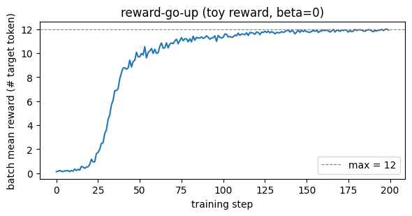
CPU 跑通：①②两步检查均 Pass，batch 平均 reward 0.28 → 11.9（warmup → 陡升 → ~11.8 平台）。